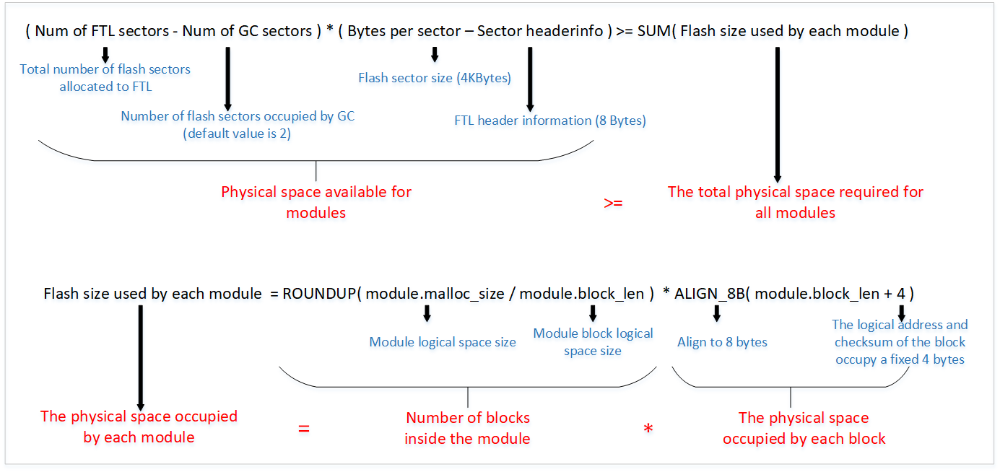

Flash
Flash is not the same as RAM since it is non-volatile storage. RAM enables direct access to read and write data. However, if flash is not empty, an erase operation is typically required before performing a flash write operation.
Note
Flash has a programming limit of up to 100,000 cycles. Frequent erasing and writing at a specific block can easily lead to bad blocks.
When users need to use flash to store data, the flash driver interface is not primarily recommended for APP. It is more advisable to use the FTL interface.
Flash Layout
The RTL87x2G chip integrates a flexible memory controller (FMC) that supports external SPI Flash. The FMC supports a maximum address mapping space of 64M bytes, corresponding to the address space 0x04000000~0x07FFFFFF. For a detailed layout of flash, refer to Flash Layout .
FTL
FTL (Flash Translation Layer) is a software abstraction layer built on the flash Driver, used for user read and write operations on flash data. The physical space location of FTL can be viewed at Flash Layout. The purpose of FTL is to simplify the process of modifying data in the flash.
Without FTL, modifying data on the flash requires the user to erase the flash first. When data is frequently modified, a significant amount of time is wasted on erasing. FTL, however, uses logical addresses instead of physical addresses to access the flash. When modifying data, the original data is not directly altered; instead, the new data is written to a new physical address, and the logical address points to this new physical address. This method avoids frequent flash erasures, saving time required for data modification.
When FTL detects that there is not enough space to write new records, it triggers the Garbage Collection (GC) mechanism to erase and reclaim outdated or unused records. By cyclically utilizing flash space and evenly distributing erase/write operations, FTL prevents certain blocks from failing prematurely, achieving wear leveling.
Currently, FTL supports both v1 and v2 versions. The v1 version includes a full implementation of the aforementioned features. Building upon v1, the v2 version improves maximum storage capacity and flash utilization, and supports creating logical space through 'module' partitioning.
Note
FTL is suitable for data that needs frequent rewriting. On one hand, the API interface is simpler, and on the other hand, it helps to extend the lifespan of the flash (wear leveling).
If the data volume is large, read-only (or occasionally rewritten), and does not require OTA upgrade support, it is recommended to use the flash API to store data in the 'APP Defined Section' area.
If the data volume is large, read-only (or occasionally rewritten), and requires OTA upgrade support, it is recommended to store data in the App Data1, App Data2, App Data3, App Data4, App Data5, App Data6, and secure app data areas within the OTA bank.
FTL v1
SDK v1.2.0 and previous versions support FTL v1 by default. If FTL v1 is needed in subsequent SDK versions, please follow these steps:
Open the SDK root directory.
Copy
ftl_v1\ftl.htobsp\sdk_lib\inc\, replacing the existingftl.hin the target path.If using GCC for compilation, copy
ftl_v1\librtl87x2g_sdk.atobsp\sdk_lib\lib\rtl87x2g\gcc\, replacing the existinglibrtl87x2g_sdk.ain the target path.If using MDK for compilation, copy
ftl_v1\rtl87x2g_sdk.libtobsp\sdk_lib\lib\rtl87x2g\mdk\, replacing the existingrtl87x2g_sdk.libin the target path.Recompile the APP project.
Functional Division of FTL v1 Space
Currently, the FTL space is divided into the following two storage spaces according to its functions. Take the default FTL physical space size of 16K as an example.
BT Storage Space
Logic address range: [0x0000, 0x0D00). but the size of this space can be adjusted through the
otp_config.hparameter. (Currently not supported by SDK)This region is used to store BT information such as device address, link key, etc.
Refer to LE Host for more details.
APP Storage Space
Logic address range: [0x0D00, 0x17F0).
APP can use this region to store user-defined information.
The following APIs can be used to read/write APP storage data.
uint32_t ftl_save(void *pdata, uint16_t offset, uint16_t size); uint32_t ftl_load(void *pdata, uint16_t offset, uint16_t size);
Note
In the implementation of the
ftl_saveAPI andftl_loadAPI, the offset parameter passed in has already been added with the offset 0x0D00 of the APP storage space, so when the APP uses these two APIs, the offset parameter can start from 0.
Adjust the Size of FTL v1 Space
The physical space size of FTL is configurable, adjusted by modifying the configuration parameters in the config file. The steps are as follows:
First, use Flash Map Generate Tool (released with MP Tool) to generate
flash map.iniandflash_map.hfile.Copy the
flash_map.hfile to the APP project directory, for example:sdk\samples\bluetooth\ble_peripheral, so that the APP can obtain the correct loading address when compiling.Load
flash map.iniinto MP Tool to generate config file for download. As shown in Modify The Flash Map Configuration File, the physical space of FTL will be adjusted to 32K.

Modify The Flash Map Configuration File
Note
When adjusting the size of the FTL physical space, the logical space available for the APP will also change accordingly. Assuming that the physical space size of the actual FTL is set to mK (m is an integer multiple of 4), the logical space available for the corresponding APP is equal to \(((511*(m-4)-4)-3328)\) bytes.
In addition, in order to improve the efficiency of FTL reading, the bottom layer has made a mapping mechanism of physical address and logical address. This mapping table will occupy a certain amount of RAM space. When the FTL physical space size is set to 16K by default, this mapping table occupies 2298 bytes of buffer RAM heap space. Suppose the physical space size of the actual FTL is set to mK (m is an integer multiple of 4), and the RAM space occupied by its mapping table is equal to \(((511*(m-4)-4)*0.375)\) bytes. Therefore, users need to adjust the size of FTL space reasonably according to specific application scenarios. If it is too large, it will waste some RAM resources.
On the other hand, if choosing a smaller flash and wanting to compress the space occupied by FTL, ensure that the physical space of FTL is not smaller than 12K. The bit width used to represent the physical address for each logical address in the mapping table is controlled by the
FTL_LOGIC_ADDR_MAP_BIT_MAPmacro inotp_config.h. The actual bit width equals the macro value multiplied by 4, with a valid range of 3~7 (corresponding to 12~28 bits). The default value is 3 (12-bit), which allows the FTL physical space to be adjusted up to a maximum of 32K.
FTL v2
SDK v1.3.0 and later versions default to using FTL v2. FTL v2 extends the basic functionalities of v1 and includes optimizations and upgrades in the following areas:
Expanded mapping table units: Each logical address is represented by 16 bits of a physical address, supporting larger storage spaces.
Added functionality to divide logical space through 'modules'.
Each FTL module can independently set the block_len when created. Choosing the block_len parameter for a 'module' reasonably can reduce the space occupied by auxiliary information and achieve higher flash utilization.
Logical spaces between 'modules' are independent of each other, with each 'module' starting its logical address from 0, which aids upper-level applications in organizing and managing data.
Functional Division of FTL v2 Space
When FTL is initialized, the 'system module' is automatically created to ensure the basic functions of FTL and store BT information. Users can create new modules to store user data.
System module
Logical address range: [0x0000, 0x0C00). It takes up 6144 bytes of physical space. However, this space size can be changed by
otp_config.hparameter. (Currently not supported by SDK)[0x0000, 0x0A20) is used to store BT information such as device address, link key, etc. Refer to LE Host for more details.
[0xA20, 0x0C00) is used to store FTL module information.
User module
Users are allowed to create up to 6 modules. Before creating a new module, it is necessary to ensure that the physical space of FTL is sufficient. Refer to Adjust the Size of the FTL v2 Space for the calculation formula.
APP can use this region to store user-defined information.
FTL APIs
int32_t ftl_init_module(char *module_name, uint16_t malloc_size, uint8_t block_len);
int32_t ftl_save_to_module(char *module_name, void *pdata, uint16_t offset, uint16_t size);
int32_t ftl_load_from_module(char *module_name, void *pdata, uint16_t offset, uint16_t size);
Note
The block_len (the third parameter of
ftl_init_module()) determines the minimum access logical space of the module, which needs to be aligned with 4 bytes. Based on the actual size of the storage data units, choosing a larger block_len whenever possible can reduce RAM usage and achieve higher flash memory efficiency (as it minimizes the space occupied by auxiliary information).The offset parameter of
ftl_save_to_module()/ftl_load_from_module()is the logical address for saving/loading data and needs to be aligned with block_len.
ftl_init_module() is used to create an FTL module, and ftl_save_to_module()/ftl_load_from_module() are used to write data to or read data from the module. Before creating a new FTL module, please ensure there is sufficient FTL physical space. For more details, see Adjust the Size of the FTL v2 Space.
The basic example is as follows:
#define EXT_FTL_NAME 'TEST_FTL'
#define EXT_FTL_LOGIC_SIZE (0x1000)
#define EXT_FTL_BLOCK_SIZE (64)
void ftl_ext_module_demo(void)
{
// Init an ext FTL module
ftl_init_module(EXT_FTL_NAME, EXT_FTL_LOGIC_SIZE, EXT_FTL_BLOCK_SIZE);
// Save data
uint8_t data_buf[EXT_FTL_BLOCK_SIZE];
memset(data_buf, 0x5A, EXT_FTL_BLOCK_SIZE);
uint16_t test_offset = 0x800;
uint32_t ret = ftl_save_to_module(EXT_FTL_NAME, data_buf, test_offset, EXT_FTL_BLOCK_SIZE);
if (ret != ESUCCESS)
{
// save data error
return;
}
// Load data
uint8_t read_buf[EXT_FTL_BLOCK_SIZE];
ret = ftl_load_from_module(EXT_FTL_NAME, read_buf, test_offset, EXT_FTL_BLOCK_SIZE);
if (ret != ESUCCESS)
{
// load data error
return;
}
}
Adjust the Size of the FTL v2 Space
The method of adjusting the FTL physical space is similar to FTL v1. For details, please refer to Adjust the size of the FTL space.
When adjusting the physical space of FTL, it is necessary to ensure that the available physical space of the FTL module meets the requirements; otherwise, the module will fail to be created. The calculation method is shown in the figure below:
The calculation formula is as follows:
{kind=link}

FTLv2 Physical Space Calculation
Additionally, to enhance FTL read efficiency, a mapping table is created for each module to facilitate the conversion between logical and physical addresses. The mapping table for the FTL module occupies RAM space: (malloc_size/block_len*2Bytes) .
Note
Since FTL requires reserved space for the 'system module' and GC mechanism, and the FTL physical space is aligned with 4KB, if a smaller flash is chosen and the FTL space needs to be compressed, it must be ensured that the FTL physical space is no less than 16KB. (The FTL reserved space can be adjusted via the otp_config.h parameter, currently unsupported by the SDK).
Flash API
If the FTL size does not meet the requirements, please refer to the flash interfaces described in the section below. There are three basic operations for flash: Read, Write, and Erase . User should invoke the interfaces described in this section to perform these operations.
Read
Function Name |
flash_nor_read_locked |
|---|---|
Function Prototype |
FLASH_NOR_RET_TYPE flash_nor_read_locked(uint32_t addr, uint8_t *data, uint32_t len) |
Function Description |
read flash data |
Input Parameter |
addr: read address of flash data: storage buffer for reading data, note that the storage buffer cannot be located on flash len: read data length |
Return Value |
If the reading is successful, the returned value is 24 in decimal notation (Corresponding to FLASH_NOR_RET_SUCCESS) |
Prerequisite |
None |
Write
Function Name |
flash_nor_write_locked |
|---|---|
Function Prototype |
FLASH_NOR_RET_TYPE flash_nor_write_locked(uint32_t addr, uint8_t *data, uint32_t len) |
Function Description |
write data to flash |
Input Parameter |
addr: write address of flash data: storage buffer for writing data, note that the storage buffer cannot be located on flash len: write data length |
Return Value |
If the writing is successful, the returned value is 24 in decimal notation (Corresponding to FLASH_NOR_RET_SUCCESS) |
Prerequisite |
None |
Erase
Function Name |
flash_nor_erase_locked |
|---|---|
Function Prototype |
FLASH_NOR_RET_TYPE flash_nor_erase_locked(uint32_t addr, FLASH_NOR_ERASE_MODE mode) |
Function Description |
erase flash |
Input Parameter |
addr: erase address of flash FLASH_NOR_ERASE_MODE: erase type of flash |
Return Value |
If the erasing is successful, the returned value is 24 in decimal notation (corresponding to FLASH_NOR_RET_SUCCESS) |
Prerequisite |
None |
Among them, flash_nor_erase_locked() supports three types of erase (FLASH_NOR_ERASE_MODE)
Erase Sector (4K-Byte) (FLASH_NOR_ERASE_SECTOR)
Erase Block (64K-byte) (FLASH_NOR_ERASE_BLOCK)
Erase chip (full flash erase) (FLASH_NOR_ERASE_CHIP)
Note
It should be noted that there is no usage scenario of chip erase in a normal application, so FLASH_NOR_ERASE_CHIP is rarely used.
Bit Modes
Except for the standard Serial Peripheral Interface (SPI), most flash models also support high-performance Dual/Quad modes I/O SPI controlled by six pins.
Serial Clock (CLK)
Chip Select (CS#)
Serial Data IO0 (DI)
Serial Data IO1 (DO)
Serial Data IO2 (WP#)
Serial Data IO3 (HOLD#)
Three Bit Modes
Single Bit Mode
The standard SPI mode, also known as 1-bit mode, uses only CLK, CS#, DI, and DO. WP# serves as the write-protect input, while HOLD# serves as the hold function input.
Dual Bit Mode
Uses CLK, CS#, and uses DI, DO as IO0, IO1 respectively. The functions of WP# and HOLD# remain the same as in single bit mode.
Quad Bit Mode
Uses CLK, CS#, and uses DI, DO, WP#, HOLD# as IO0, IO1, IO2, IO3 respectively. As all six pins are used, write protection and hold functions are unavailable in quad-bit mode.
Note
RTL87x2G supports two quad modes: STR and DTR. If users need to use the corresponding quad read mode, it is necessary to check the flash datasheet or AVL for flash features.
Bit Mode Switch
Before entering the application, RTL87x2G will automatically switch to the fastest bit mode (it switches to 4-bit mode if the Flash supports it, and to 2-bit mode if the Flash only supports that).
If users need to freely switch bit modes (1-bit, 2-bit, or 4-bit mode), they can call the interface provided in the SDK: flash_nor_try_high_speed_mode() . The parameter 'mode' is used to configure bit mode.
and if the switch fails, it will revert to 1-bit mode automatically.
The prototype of the interface function provided by SDK for bit mode switching is as follows.
Function Name |
flash_nor_try_high_speed_mode |
|---|---|
Function Prototype |
FLASH_NOR_RET_TYPE flash_nor_try_high_speed_mode( FLASH_NOR_IDX_TYPE idx, FLASH_NOR_BIT_MODE mode ) |
Function Description |
switch flash to high-speed bit mode |
Input Parameter |
idx: the default value is FLASH_NOR_IDX_SPIC0 mode: the bit-mode to switch to (FLASH_NOR_1_BIT_MODE, FLASH_NOR_2_BIT_MODE, FLASH_NOR_4_BIT_MODE, FLASH_NOR_DTR_4_BIT_MODE) |
Return Value |
If the switching is successful, the returned value is 24 in decimal notation (Corresponding to FLASH_NOR_RET_SUCCESS) |
Prerequisite |
None |
Meanwhile, RTL87x2G supports configuring the FMC clock to improve read and write performance. The FMC clock defaults to a 40M clock source.
After the FMC clock is divided by two for the NOR Flash, the operating clock of the NOR Flash is 20M at this time.
To increase the frequency, developers can call the interface provided in the SDK: fmc_flash_nor_clock_switch() . For usage reference, see FMC Clock Configuration .
Note
It should be noted that since the 1-bit mode supports a relatively low frequency, switching the clock from low speed to high speed requires changing the bit mode first (to 2-bit or 4-bit mode). Conversely, when switching from a high-bit mode (2-bit or 4-bit) back to 1-bit mode, developers must first reduce the clock speed before changing the bit mode.
Software Block Protect
Flash has multiple protection mechanisms to prevent accidental erase or writing. The two main protection mechanisms are software block protection and hardware pin protection.
Locking the flash via the hardware protection pin (#WP) has the following two drawbacks:
If the #WP pin is used as a protection function, the flash's quad mode cannot be used.
Hardware protection can only choose to protect the entire flash or not protect it at all. It cannot protect a portion of flash.
The RTL87x2G uses a more flexible mechanism, Software Block Protect (BP), to prevent accidental flash erase and writing operations. The principle is to use some BP bits in the flash status register to select the range to be protected. By default, the RTL87x2G uses the BP function to protect some important data (such as configured parameters) and code segments, rather than the entire flash space. Flash uses the BP (X) bits in the status register to identify the number of blocks to be locked, and the TB bit to determine the locking direction. The RTL87x2G only supports locking starting from the low address end of the flash.
Protection Level
Software block protection levels vary depending on the flash model used. The main models currently in use and their protection levels are as follows:
Regular software block protection levels, such as GD25WD80, GD25WD40, ZB25WD80B, and ZB25WD40B.
Irregular software block protection levels, such as P25Q40SU and P25Q80SU.
Below, the software block protection levels of GD25WD80 and P25Q40SU are used as examples to illustrate these two flash locking level patterns.
The software block protection levels of GD25WD80 are shown in the figure below. It supports full lock, no lock, and the minimum lock region is 768KB. For this category, if locking to 1/2 is possible, RTL87x2G supports full lock, no lock, and lock 1/2 these three locking options. Other levels are not supported. If locking to 1/2 is not possible, only full lock and no lock are supported.
GD25WD80 Software Block Protection BP2
BP1
BP0
Density
Portion
0
0
0
NONE
NONE
0
0
1
1016KB
Lower 254/256
0
1
0
1008KB
Lower 252/256
0
1
1
992KB
Lower 248/256
1
0
0
960KB
Lower 240/256
1
0
1
896KB
Lower 224/256
1
1
0
768KB
Lower 192/256
1
1
1
1024KB
ALL
The software block protection levels of P25Q40SU are shown in the figure below. Starting from full lock, it can lock 1/2, 1/4, 1/8 until no lock at all. For this regular category, all software block protection levels provided by the flash can be set.
P25Q40SU Software Block Protection BP2
BP1
BP0
Density
Portion
0
0
0
NONE
NONE
0
0
1
64KB
Lower 1/8
0
1
0
128KB
Lower 1/4
0
1
1
256KB
Lower 1/2
1
x
x
512KB
ALL
Note
The provided interface functions for BP setting include flash_nor_set_bp_lv_locked(), flash_nor_get_bp_lv_locked().
Automatic Locking Mechanism
For user convenience, the RTL87x2G provides an automatic locking mechanism controlled by the macro DEFAULT_FLASH_BP_LEVEL_ENABLE . When #define DEFAULT_FLASH_BP_LEVEL_ENABLE 1 is defined in the header file otp_config.h , the maximum lockable range will be locked according to the configured flash layout and the chosen flash model, that is,
from the starting address of the flash to the end address of OTA bank1 (flash layout refer to Flash Layout).
Most flash devices support level-based protection, covering different sizes of areas including the initial 64KB, 128KB, 256KB, 512KB, etc.
When partitioning the flash layout, it's crucial to align the OTA bank1 end address offset with one of the protection levels supported by the flash, as much as possible. This ensures that important data and code areas are fully locked, without impacting the data area filled with information that needs to be overwritten, like the 'FTL' or 'OTA Tmp' area. Once the flash layout is set, RTL87x2G will automatically parse the flash layout configuration parameters and fetch the selected flash information to determine the BP protection level. If the flash model in use solely supports the block protection mode as shown in GD25WD80 Software Block Protection , RTL87x2G will choose not to enable the lock.
Summarizing the information provided, the RTL87x2G supports two methods for protecting flash:
Using the
flash_nor_set_bp_lv_locked()interface: This method is more straightforward and unrestricted. However, the bp_lv parameter needs to be determined by the user based on the corresponding flash's datasheet. For instance, with the P25Q40SU, when setting the lock region to the first 256KB, the status register would have BP2 as 0, BP1 as 1, and BP0 as 1. Hence, the bp_lv parameter for theflash_nor_set_bp_lv_locked()would be 3.Enabling the macro DEFAULT_FLASH_BP_LEVEL_ENABLE to use the automatic locking mechanism: With this method, users do not need to calculate the bp_lv parameter. However, If the flash in use solely supports the block protection mode as shown in GD25WD80 Software Block Protection , the locking process may fail.
Note
Since the current version of the OTA demo does not yet support upgrades when flash is locked, it is not recommended to use this feature at this time.
Power Saving
The power mode of flash is mainly divided into three scenarios.
Working: the power consumption is generally around 10 mA.
Standby: the power consumption is typically around the order of 10 uA.
Power Down: the power consumption is lower, where it is even less than 1 uA.
Flash automatically enters standby mode without any access, and automatically enters working state when it needs to be accessed again. In order to enter Power Down mode, use a specific command. Most flash use the command 0xB9 to enter Power Down mode and use the command 0xAB to exit Power Down mode. But MXIC toggles the #CS pin to wake up flash.
Note
It should be noted that after the flash enters Power Down mode, receiving any command other than the exit Power Down command (0xAB) is dangerous. This is because, after entering Power Down mode, the flash only accepts wake-up commands to exit Power Down mode, all other commands will be ignored, but the flash controller may enter an infinite loop waiting for the flash's response.
To prevent the risks associated with the misuse of Flash Power Down mode, the system's DLPS mechanism has incorporated control of the Flash Power Down mode: when entering DLPS, an instruction is automatically issued to put the flash into Power Down mode, and upon exiting DLPS, the flash is awakened.
XIP
XIP (eXecute In Place) is a technique that allows code to be executed directly in flash memory without having to copy it into RAM. This saves RAM space and improves the efficiency of code execution. If the remaining RAM space is sufficient, APP code can be directly executed on RAM, which is conducive to improving performance and reducing power consumption. However, if the APP code is so large that the remaining RAM space is not enough, some or all of the APP codes need to be executed on flash (XIP). Configuration of XIP on RTL87x2G is as follows.
Macro FEATURE_RAM_CODE
Configured in
mem_config.h:When set to 1, code without any section modifiers by default will execute on RAM.
When set to 0, code without any section modifiers by default will execute in flash.
Section Decoration
Reference
app_section.hAPP_FLASH_TEXT_SECTION: Specifies that the code section is executed on flash.
APP_RAM_TEXT_SECTION: Specifies that the code section is executed on RAM.
Note
If RAM space is insufficient, give higher priority to implementing time-sensitive code on RAM to ensure efficiency.
Ways to Improve the Efficiency of Executing XIP Code
Switch the flash to dual or quad mode: Call
flash_nor_try_high_speed_mode().
RTL87x2G can access flash with auto read (directly accessing flash addresses) through FMC, and execute code directly on SPI flash. However, the operation of accessing flash in user mode is not atomic. Once the accessing is interrupted by higher priority tasks or interrupts, it is possible to cause flash access error. To ensure atomicity of flash operations in user mode, XIP should follow the following restrictions and precautions.
Note
Accessing flash operations in user mode requires calling APIs with the '_locked' suffix to ensure critical area protection. If the time of the flash operation is too long, such as writing a large amount of data at one time, it is not suitable for critical zone protection, and can be split into a smaller amount of data written a few times.
If the time-critical interrupt needs to be processed, it is also necessary to ensure that the ISR (interrupt service routine) itself cannot be XIP, and the ISR also prohibits accessing the flash.
See Also
Please refer to the relevant API Reference: